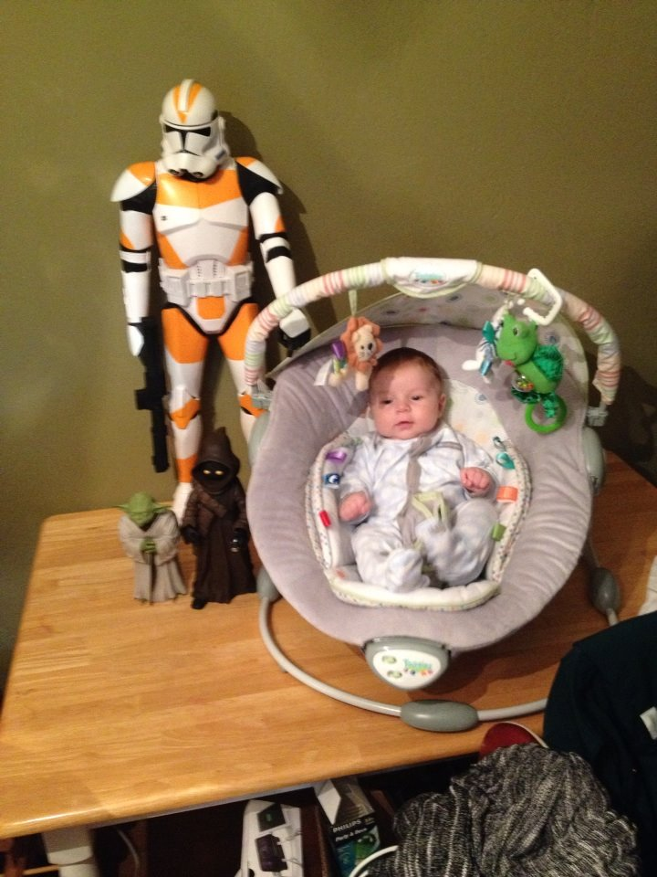

Mike Herring
Beginner Front End Webperson

About Me
I was born in the seventies. It was a simpler time. In the summer of 1990, just before Iraq invaded Kuwait, I went to Germany to visit my friend Thilo and go with his Boy Scout troop on a backpacking tour of Ireland. The first three pictures up above are from that trip. If you look at the close-up of my face, you can see in the reflection of my glasses a monastery in Germany. The boat was in Venice, Italy, and the harbor is the eastern, sheltered side of the Aran Island on Ireland's west (Atlantic) coast.
I graduated High School then went to Texas A&M to be a mechanical engineer. I left after a few years to work for a while. Went back to school in 1998 and got my degree in 2001 from Tarleton State University in Computer Information Systems, not in Mechanical Engineering. It's around this time that I got my dog, Trevor, seen above. The .com bubble burst that year, so the nice COBOL job I had lined up went away, and I ended up working for a very small company owned by a friend of the family that made controls for the oil & gas industry. The first project I worked on was pretty neat. It was a mimic panel that would allow manual or automatic (computer) controlled access to all the valves and pumps and mix tanks on the boat. I got to go to Dubai, UAE to install it, and train people on how to use it. I ended up re-soldering most of the logic circuits to light up the mimic panel as the boat's actual architecture differed greatly from the plan we were given. I ended up going over there several times and spent about a year and a half over there all together, spread out over four years. The second to the last trip I had to go to the hospital for a few days: that was not fun. The last trip we were out at sea doing final testing when they had the worst storm in over 100 years. The sea was angry, angry like an old man trying to return soup at a deli, to quote George Castanza. Everyone on the boat got violently seasick, except oddly for me, who had been seasick right up to that point. Since I was not sick, I got to help out the captain at the very top of the boat since he was violently ill. He was strapped into his chair and would occasionally spin around and around like a top as the boat rocked and rolled and moved all about and he would get incredibly ill. Luckily a lot of water was coming onto the bridge so it washed everything out mostly. The top of the boat rocks even more than the rest of the boat, and it was quite an experiance to be up there and not be able to see anything other than water even though I was forty or so feet above the waterline (usually, in calm waters anyway). I have no idea how we didn't hit an oil platform or another ship or even run aground. The next morning the sea was so calm you could almost walk on it as we limped back to shore. As soon as the boat got close enough to jump off, we literally jumped off onto the dock. And did not go back for several days.
Later on I went to the Caño Limón (Lemon Creek is the best approximation I heard in English) oilfield in Colombia to train some new customers on our hardware and software, and on some software that we sold them but did not create. I was there about a month or so for that job. Sadly, I was there in the oilfield for Christmas and I got insanely sick from food poisoning at the Christmas Eve feast. They thought I was going to die. I did, too, but it's a little scary when the doctor asks you in Spanish/broken English if you want to see a priest. I got better, and oddly enough have not had any out of country jobs since then :) The work our customer did there turned Colombia from a net importer of oil to an exporter.
I got married in 2011 to Shanna Marie Brown, the love of my life. In 2012 my boss, the owner of the company I worked for, got real sick and I realized that when he died, which will be soonish, the company was doomed, so I started thinking about the future. Since I'd been doing Visual Basic 6 exclusively for 10 years at that point I realized my coding skills were deficient and unmarketable, and feeling a bit burned out on coding in general I decided to go back to school and get a Mechanical Engineering degree. I started taking night classes, then in summer of 2013, just before class started, my boss said I was no longer going to be able to work there. So I went back to school full time at that point. Then about two weeks later we found out my wife Shanna was pregnant! And then three weeks later she was laid off when the company she worked for shut down their Dallas office! It was a rocky time.
We decided that I should stay in school and Shanna convinced her boss' boss to let her stay on until maternity leave and she would help close down the office. That worked out well, and she was able to find another job after Tristan Ethan Lewis Herring was born in April of 2014.
Here is a picture of Tristan when he was about a month old:
As you may be able to tell from the previous picture, I am a huge Star Wars fan, so Tristan's nursery is Star Wars themed.

Earning a degree in Engineering is very difficult and a huge time sink. I was getting Tristan to daycare by 8, in class by 9, and not getting home till 6, cooking dinner, playing with Tristan till his bedtime, then as soon as he was asleep I was up till 2 or 3 each morning working on classwork. Which was much more doable when I was 20. And unmarried. And not a dad. It made for a very unhappy home life. Luckily we ran out of money. :) Kids, it turns out, especially not-really-planned-for kids, are expensive! :) Also last semester I had several projects that I had to work on in Matlab and C and I realized that I still liked coding, I'd just been burned out on the job I had been doing. So here I am taking some classes in front end web coding. I talked to several friends who code, and they all said it was a good place to get back into the business.
Here is a picture of me taken by my six year old nephew Brady when we watched The Empire Strikes Back a few weeks ago:
Make sure you click on the above link to go back to where you came from. Go back where you belong! Go on! Get!!